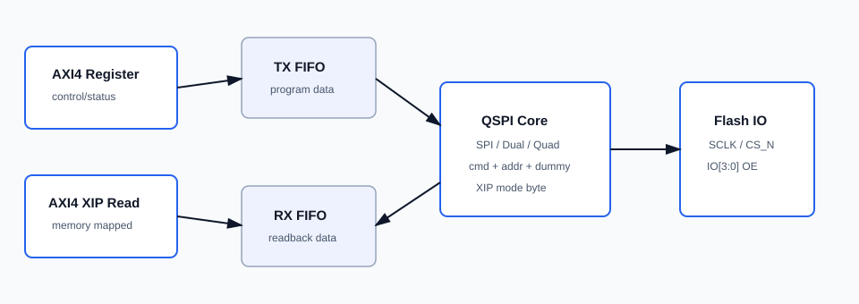
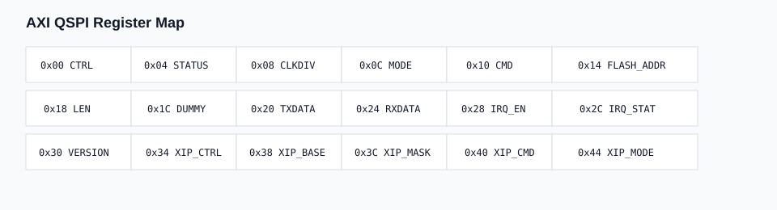
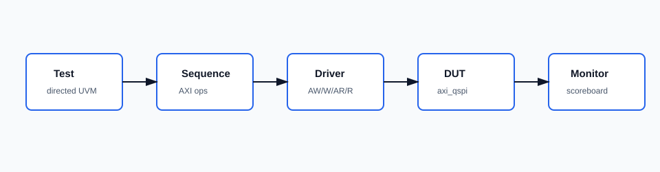

Overview
The AXI QSPI Controller provides a register-programmed QSPI flash command engine and a memory-mapped read window for execute-in-place style flash access.
Control
AXI register access controls command, address, length, dummy cycles, mode, FIFO, IRQ, and XIP setup.
Flash Modes
Standard SPI, Dual SPI, and Quad SPI lanes are selected through the MODE register.
XIP
Base/mask decode accepts AXI read bursts and converts them into QSPI flash reads.
Architecture
The wrapper arbitrates between register-driven transfers and the XIP memory read path before driving the shared QSPI core.

Top Interface
| Group | Signals | Description |
|---|---|---|
| Clock/reset | i_qspi_aclk, i_qspi_aresetn | Single synchronous clock domain and active-low reset. |
| AXI register | i_qspi_s_*, o_qspi_s_* | Configuration, status, FIFO, and IRQ register access. |
| AXI memory | i_qspi_m_ar*, o_qspi_m_r* | Read-only XIP window for external flash data. |
| QSPI pins | o_qspi_sclk, o_qspi_cs_n, i/o_qspi_io_* | Pad-wrapper friendly IO split into input, output, and output-enable. |
| Interrupt | o_qspi_irq | OR of enabled done/error events. |
Register Map

| Offset | Name | Description |
|---|---|---|
0x00 | CTRL | Bit 0 starts a transfer, bits 2:1 select read/program/erase, bit 8 clears FIFOs. |
0x04 | STATUS | Busy, done, error, TX empty, RX valid, and XIP active flags. |
0x08 | CLKDIV | SPI clock divider. |
0x0C | MODE | 0: SPI, 1: Dual, 2: Quad. |
0x10 | CMD | Manual flash command byte. |
0x14 | FLASH_ADDR | Manual transfer flash address. |
0x18 | LEN | Transfer length in bytes. |
0x1C | DUMMY | Dummy cycles before data phase. |
0x20 | TXDATA | TX FIFO write port. |
0x24 | RXDATA | RX FIFO read port. |
0x28 | IRQ_EN | Enable done/error interrupts. |
0x2C | IRQ_STAT | Pending interrupt bits, write one to clear. |
0x30 | VERSION | IP version value 0x0001_0000. |
0x34-0x44 | XIP | XIP enable, base, mask, command override, and mode byte. |
XIP
When XIP_CTRL[0] is set, the memory interface accepts AXI reads that match
(ARADDR & XIP_MASK) == (XIP_BASE & XIP_MASK). In Quad mode with
XIP_CMD == 0 and XIP_MODE[8] == 1, the memory path selects
Quad I/O read command 0xEB and emits mode byte 0xA0.
Verification
The UVM environment mirrors the AES IP folder style and includes directed bring-up tests for registers, XIP setup, FIFO/IRQ smoke behavior, and AXI AW/W skew.

| Test | Coverage Goal | Status |
|---|---|---|
axi_qspi_reg_test | VERSION and register R/W behavior. | READY |
axi_qspi_xip_test | XIP base/mask/cmd/mode-byte programming. | READY |
axi_qspi_axi_skew_test | AW/W independent handshake and WSTRB byte writes. | READY |
axi_qspi_fifo_irq_test | TX FIFO and done/IRQ smoke flow. | SMOKE |
axi_qspi_all_test | Directed regression wrapper. | READY |
make lint
make uvm_compile
make uvm_run UVM_TEST=axi_qspi_all_testIntegration Notes
ASIC IO
The RTL exposes IO input/output/OE. Connect real pads in the chip wrapper; do not instantiate standard cells as IO pads.
AXI
The register block supports independent AW/W acceptance and WSTRB byte updates. The memory path is read-only.
Software
Configure clock divider, mode, dummy cycles, command/address/length, then assert CTRL.START or enable XIP for memory reads.